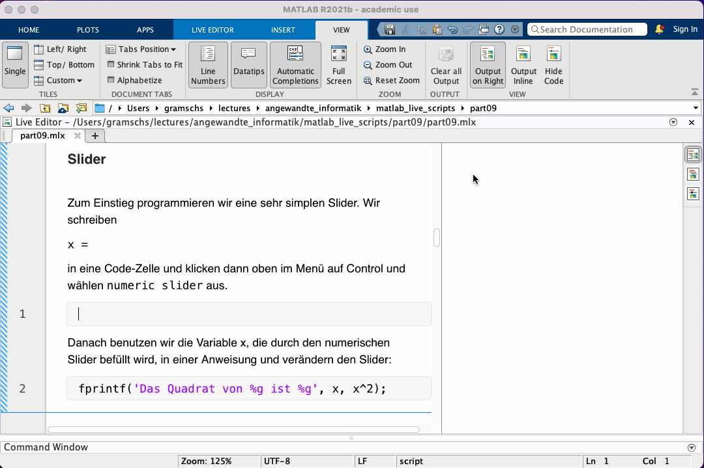
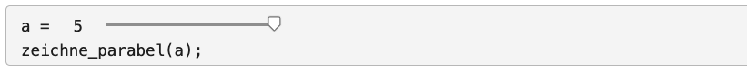
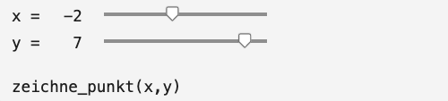
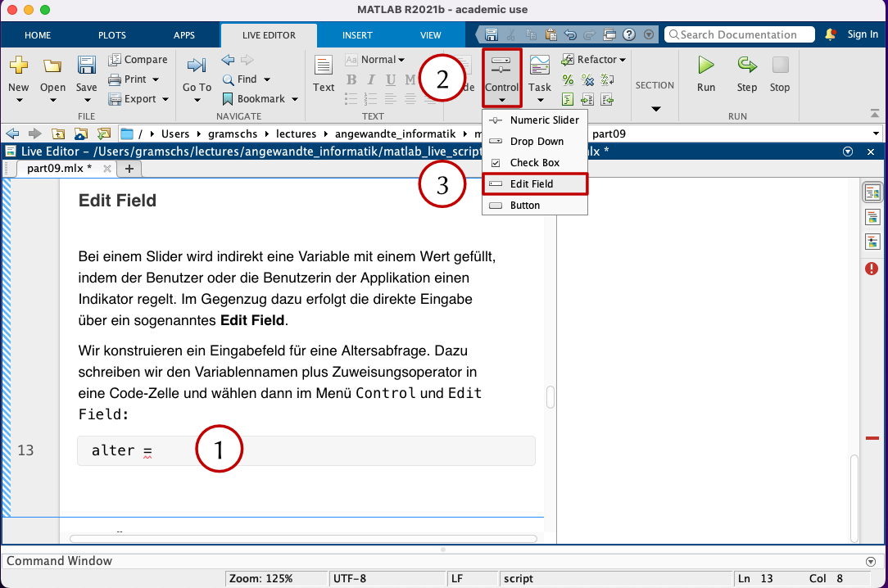
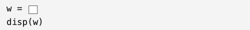
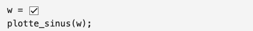
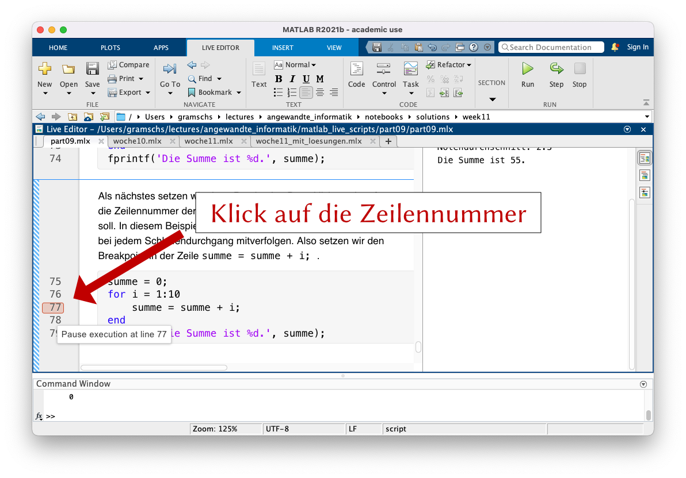
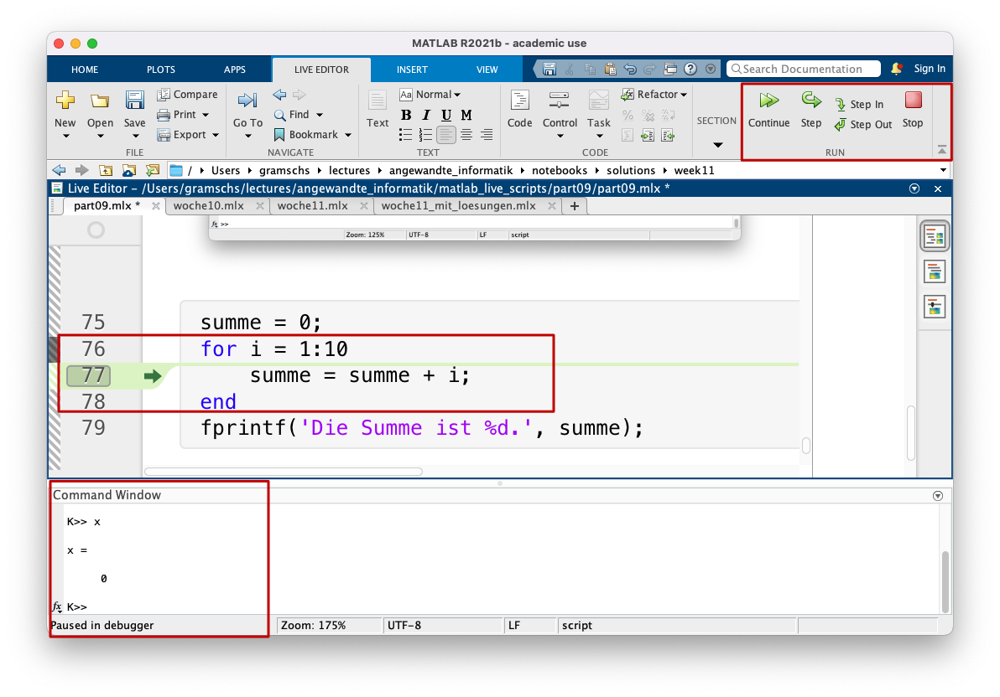

GUI und Fehlersuche
Contents
GUI und Fehlersuche¶
Bisher haben wir alle Eingaben über die Tastatur direkt in dem sogenannten Command Window vorgenommen. Normalerweise wird Software jedoch über eine graphische Benutzeroberfläche bedient. Graphische Benutzeroberfläche heißt auf Englisch graphical user interface und normalerweise verwenden wir nur die Abkürzung dafür, also GUI.
Das Design einer GUI und ihre Implemenierung in MATLAB sind zwei Themen, mit denen man eine eigene Vorlesung füllen könnte. Wir werden in dieser Vorlesung GUIs nur anreißen können. Anstatt eine eigene GUI zu entwickeln, erarbeiten wir uns, welche GUI-Elemente es gibt und betten sie in das MATLAB Live Script ein. Danach beschäftigen wir uns mit der systematischen Fehlersuche.
Graphische Benutzeroberfläche oder kurz GUI¶
In den bisherigen Programmen ohne GUI ist der Programmablauf weitestgehend linear. Natürlich haben wir gelernt, den Programmcode zu verzweigen, zu wiederholen oder per Funktion auszulagern, aber eine Input-Abfrage kommt an einer genau definierten Stelle im Programm vor. Bei einer GUI haben die Benutzer:innen jedoch die Möglichkeit, zuerst hier zu klicken und dann an einer anderen Stelle einen Wert einzugeben. Daher erfordert die GUI-Programmierung, dass im Hintergrund das laufend überprüft wird, ob Benutzer:innen nun eine Eingabe gemacht haben oder nicht, und dann muss das Programm entsprechend reagieren.
MATLAB bietet drei Möglichkeiten an, GUIs zu implementieren:
Konvertierung eines MATLAB Live Scripts in eine einfache App
Interaktive Entwicklung einer App mit GUIDE, dem GUI-Designer
Programmierung einer App mit reinen MATLAB-Befehlen
Wie Sie sich denken können, ist die erste Variante am schnellsten zu erlernen, bietet jedoch die wenigsten Konfigurationsmöglichkeiten. Wenn Sie sich für GUIDE oder die programmatische App-Entwicklung interessieren, finden Sie in der MATLAB Dokumentation weitere Hilfestellung.
Slider¶
Zum Einstieg programmieren wir eine sehr simplen Slider. Wir schreiben
x =
in eine Code-Zelle und klicken dann oben im Menü auf Control und wählen numeric slider aus. Danach benutzen wir die Variable x, die durch den numerischen Slider befüllt wird, in einer Anweisung
fprintf('Das Quadrat von %g ist %g', x, x^2);
und verändern den Slider. Das Einfügen des Sliders wird in der folgenden Animation gezeigt:

Schauen wir uns ein zweites Beispiel an. Wir visualisieren eine Parabel mit einem Vorfaktor, also \(f(x)=ax^2\) . Dazu schreiben wir eine Funktion, die den Vorfaktor als Input-Argument entgegen nimmt und dann die Parabel mit dem Definitionsgebiet [−10,10] zeichnet. Die Implementierung dieser Funktion zeichne_parabel() finden Sie ganz unten am Ende des MATLAB Live Skripts.

Wie Sie sehen, werden die Optionen für den Slider beim Aufruf gesetzt. Das vertiefen wir gleich. Zunächst eine kleine Aufgabe.
Exercise 58
Schreiben Sie eine Funktion, die die Funktion \(f(x)=\sin(kx)\) im Intervall \([-2\pi, 2\pi]\) zeichnet. Definieren Sie anschließend für k einen Slider mit Startwert k=2. Bewegen Sie anschließend den Slider.
Solution to Exercise 58
k = 1 % durch Slider ersetzen
zeichne_sinus(k)
% am Ende des MATLAB Live Skriptes
function zeichne_sinus(k)
x = linspace(-2*pi, 2*pi);
y = sin(k*x);
plot(x,y);
xlim([-2*pi, 2*pi]);
ylim([-1,1]);
end
Es ist auch m√∂glich, zwei Slider zu definieren. Die Funktion zeichne_punkt() (Implementierung ganz unten) zeichnet einen Punkt an den Koordinaten (ùë•,ùë¶):

Exercise 59
Eine Gerade wird durch die Funktionsgleichung
mit der Steigung \(m\) und dem y-Achsenabschnitt \(b\) beschrieben. Schreiben Sie eine Funktion, die eine Gerade im Intervall \([-5, 5]\) zeichnet und bei der die y-Achse stets zwischen -10 und 10 anzeigt. Eine Benutzerin oder ein Benutzer soll die Steigung im Bereich \(m\in [-3,3]\) mit der Schrittweite \(0.1\) und den y-Achsenabschnitt \(b\in [-7.5, 7.5]\) mit der Schrittweite \(0.5\) wählen können.
Solution to Exercise 59
m = 1 % durch Slider ersetzen
b = 1 % durch Slider ersetzen
zeichne_gerade(m,b);
% am Ende des Live Skriptes
function zeichne_gerade(m,b)
x = linspace(-5, 5);
y = m.*x + b;
plot(x,y);
xlim([-5,5]);
ylim([-10,10])
end
Edit Field¶
Bei einem Slider wird indirekt eine Variable mit einem Wert gefüllt, indem der Benutzer oder die Benutzerin der Applikation einen Indikator regelt. Im Gegenzug dazu erfolgt die direkte Eingabe über ein sogenanntes Edit Field.
Wir konstruieren ein Eingabefeld für eine Altersabfrage. Dazu schreiben wir den Variablennamen plus Zuweisungsoperator in eine Code-Zelle und wählen dann im Menü Control und Edit Field:

Beachten Sie, dass Sie den Datentyp von String auf Double umstellen müssen, damit der Datentyp der Variable alter auch als Zahl interpretiert wird.
Exercise 60
Schreiben Sie ein Programm, das das Geburtsjahr eines Benutzers über ein Edit Field abfragt und danch das Alter berechnet und ausgibt.
Solution to Exercise 60
geburtsjahr = 2001 % durch EditField ersetzen
fprintf('Sie sind %g Jahre alt.', geburtsjahr)
Drop-Down-Liste¶
Eine Drop-Down-Liste, manchmal auch Pulldown-Menü genannt, ermöglicht eine Auswahl aus einer Liste von Objekten. Die einzelnen Auswahlmöglichkeiten werden als Item Labels gelistet.
Wiederum müssen Sie die Drop-Down-Liste über den Menüpunkt Control einfügen. Sie werden nach den Werten (item values) gefragt, die in der Drop-Down-Liste stehen sollen. Geben Sie dort pro Zeile eine Zahl ein.
Exercise 61
Schreiben Sie ein Programm, bei dem der Benutzer über zwei Drop-Down-Listen den Tag und den Monat seines Geburtstages auswählt. Lassen Sie den Computer danach feststellen, ob der Benutzer dieses Jahr schon Geburtstag hatte, heute gerade Geburtstag hat (Gratulation) oder noch Geburtstag haben wird. Geben Sie eine entsprechende Meldung aus.
Solution to Exercise 61
tag = 25 % durch DropDown ersetzen
monat = 6 % durch DropDown ersetzen
heutiger_tag = 25
heutiger_monat = 6
if monat < heutiger_monat
disp('Sie hatten schon Geburtstag.');
elseif monat == heutiger_monat
if tag < heutiger_tag
disp('Sie hatten schon Geburtstag.');
elseif tag == heutiger_tag
disp('Happy Birthday :-)');
else
disp('Sie werden dieses Jahr noch Geburtstag haben...');
end
else
disp('Sie werden dieses Jahr noch Geburtstag haben...');
end
Checkbox¶
Checkboxen sind explizit für die Abfrage von booleschen Werte, d.h. wahr oder falsch, gemacht. Hier direkt ein Beispiel. Wir schreiben zuerst den Namen der Variable hin, der den Wahrheitswert speichern soll. Mit Hilfe des Zuweisungsoperators weisen wir dann den Wert der Checkbox der Variable w zu. Die Checkbox wählen wir über Control und Check Box aus.

Wir erweitern unseren Plot der Sinus-Funktion um eine Legende. Sehen Sie sich am Ende des MATLAB Live Skripts an, wie die boolesche Variable w der Funktion plotte_sinus() als Argument namens mit_legende übergeben wird und dann mit einer Programmverzweigung entschieden wird, ob die Legende gezeichnet werden soll oder nicht.

Exercise 62
Schreiben Sie ein Programm, bei dem der Benutzer über eine Drop-Down-Liste zwischen den Funktionen Sinus und Kosinus wählen darf. Anschließend wird die ausgewählte Funktion im Intervall \([−2\pi,2\pi]\) gezeichnet. Über eine Checkbox darf der Benutzer entscheiden, ob die Gitterlinien eingeblendet werden sollen oder nicht.
Solution to Exercise 62
% Optionenwahl
funktion_dropdown = "Sinus" % durch DropDown ersetzen
mit_gitter = true % durch Checkbox erszsetzen
% Programm
x = linspace(-2*pi, 2*pi);
if funktion_dropdown == "Sinus"
y = sin(x);
else
y = cos(x);
end
plot(x,y);
if mit_gitter == true
grid on;
end
Fehlersuche und Testen¶
Selbst erfahrene Softwareentwickler-Teams machen Fehler bei der Programmierung. Die Suche nach Fehlern im Programm ist schwierig, kann aber durch technische Hilfsmittel unterstützt werden, allen voran durch den Debugger (= eine Art Fehlersuch-Werkzeug). Damit Sie den Debugger nutzen können, benötigen Sie eine IDE (= integrated development environment) mit Debugger, also eine integrierte Entwicklungsumgebung mit Fehlersuch-Werkzeugen. Aber zunächst beschäftigen wir uns mit Fehlern im Allgemeinen.
Arten von Fehlern¶
Aber was ist überhaupt ein Bug? In der Informatik wird ein Programmfehler Bug genannt. Wie in dieser Erklärung https://de.wikipedia.org/wiki/Programmfehler erläutert, gibt es verschiedene Arten von Programmfehlern. Am häufigsten sind
syntaktische Fehler und
semantische Fehler.
Syntaktische Fehler sind Fehler, bei denen das Entwickler-Team gegen die Regeln der Programmiersprache verstoßen hat. Z.B. produziert eine fehlende Klammer einen Syntaxfehler:
disp('Hallo'
Syntaktische Fehler braucht man nicht im eigentlichen Sinn zu suchen, denn syntaktische Fehler führen dazu, dass das Programm abbricht. Schwieriger hingegen ist es, die Ursache des syntaktischen Fehlers zu ermitteln und den Fehler zu beheben. Oft ist es hilfreich, die Fehlermeldung in eine Internet-Suchmaschine einzugeben. Oft haben andere Programmierer ebenfalls schon diesen Fehler im Programm gehabt und es gibt Erläuterungen zu dieser Fehlerart.
Semantische Fehler sind besonders schwer zu finden. Bei semantischen Fehlern gibt es keine Fehlermeldung des Interpreters und das Programm läuft auch, ohne abzustürzen. Aber das Ergebnis entspricht nicht dem, was die Entwicklerin oder der Entwickler beabsichtigt hatte.
In dem folgenden Programm beispielsweise soll der Notendurchschnitt von Praxisbericht (Gewichtung 80 %) und Präsentation (20 %) berechnet werden. Schauen Sie sich den Programmcode an. Wo ist der Fehler?
summe = 0;
anzahl = 0;
weitere_note_eingeben = true;
while weitere_note_eingeben == true
note = input('Bitte geben Sie eine Note ein. Wenn Sie die Note 0 eingeben, ist die Noteneingabe beendet. ');
if note == 0
weitere_note_eingeben = false;
else
summe = note;
anzahl = anzahl + 1;
end
end
durchschnitt = summe / anzahl;
fprintf('Der Durchschnitt der Noten ist %g', durchschnitt);
Fehlersuche mit der Strategie “Debugging by Printing”¶
Aber wie gehen wir jetzt vor, um sicherzustellen, dass das von uns entwickelte Programm auch den beabsichtigten Zweck erfüllt? Als erstes überlegen wir uns Testfälle. Dazu später mehr. Auf dem Papier notieren wir uns, was das Programm für Zwischenergebnisse liefern sollte, welche Ausgaben und welches Gesamtergebnis. Für ein Testbeispiel mit den Noten 1.3, 3.7 und 2.3 hätten wir also folgenden wünschenswerten Ablauf:
summe = 0
anzahl = 0
weitere_note_eingeben = true
Benutzereingabe: note = 1.3
else-Zweig:
summe = 1.3
anzahl = 1
Benutzereingabe: note = 3.7
else-Zweig:
summe = 5.0
anzahl = 2
Benutzereingabe: note = 2.3
else-Zweig
summe = 7.3
anzahl = 3
Benutzereingabe: 0
if-Zweig:
weitere_note_eingeben = false
durchschnitt = 7.3/3 = 2.433333333333333
Ausgabe: Der Durchschnitt der Noten ist 2.433333333333333
Leider fehlt uns derzeit der Einblick in unseren Programm-Code. Eine sehr einfache und schnelle Methode ist die Fehlersuche durch fprintf-Anweisungen. Diese Methode funktioniert immer, kann aber bei größeren Programmen auch schnell unübersichtlich werden. Daher ist die Weiterentwicklung der “Debugging by Printing”-Methode der Debugger, auf den wir noch später zurückkommen werden. Erweitern wir unser Programm mit fprintf-Anweisungen und sehen wir, was passiert, wenn wir die Noten 1.3, 3.7, 2.3 und 0 eingeben:
summe = 0;
fprintf('summe = %g', summe);
anzahl = 0;
fprintf('anzahl = %g', anzahl);
weitere_note_eingeben = true;
fprintf('weitere_note_eingeben = %g', weitere_note_eingeben);
while weitere_note_eingeben == true
note = input('Bitte geben Sie eine Note ein. Wenn Sie die Note 0 eingeben, ist die Noteneingabe beendet. ');
fprintf('note = %g', note);
if note == 0
weitere_note_eingeben = false;
fprintf('if-Zweig: note = %g', note);
fprintf('if-Zweig: weitere_note_eingeben = %g', weitere_note_eingeben);
else
summe = note;
fprintf('else-Zweig: summe = %g', summe);
anzahl = anzahl + 1;
fprintf('else-Zweig: anzahl = %g', anzahl);
end
end
durchschnitt = summe / anzahl;
fprintf('durchschnitt = %g', durchschnitt);
fprintf('Der Durchschnitt der Noten ist %g', durchschnitt);
Fehlersuche mit einem Debugger¶
Ein Debugger ist ein spezielles Fehlersuchwerkzeug. Zuerst werden im Code Haltepunkte gesetzt. Haltepunkte werden im Englischen Breakpoints genannt. Damit ist gemeint, dass der Code ausgeführt wird, bis der Breakpoint erreicht wurde und dann stoppt der Interpreter die weitere Programm-Ausführung, so dass wir den aktuellen Zustand des Codes untersuchen können. Beispielsweise können wir inspizieren, welche Werte die einzelnen Variablen gerade gespeichert haben.
Wir schauen uns ein einfache Beispiel an, bei dem die Zahlen von 1 bis 10 aufsummiert werden sollen. Dazu verwenden wir eine for-Schleife:
summe = 0;
for i = 1:10
summe = summe + i;
end
fprintf('Die Summe ist %d.', summe);
Als nächstes setzen wir einen Breakpoint. Dazu klicken wir auf die Zeilennummer der Zeile, in der der Breakpoint gesetzt werden soll. In diesem Beispiel wollen wir den Inhalt der Variable summe bei jedem Schleifendurchgang mitverfolgen. Also setzen wir den Breakpoint in der Zeile summe = summe + i;.

Wie sehen, verändert sich das MATLAB Fenster. Rechts oben im Menü tauchen nun neue Buttons für das Debugging auf. Im Command Window steht ein K vor dem Prompt >>. Die Zeile, in der der Debugger gerade angehalten hat, wird durch einen grünen Pfeil markiert. Die folgende Grafik zeigt die drei neuen Elemente:

Nun können Sie im Command Window sich den Inhalt der Variablen ausgeben lassen. Mit dem Pfeil recht oben namens Step können Sie den MATLAB Code einen weiteren Schritt ausführen lassen. Da es sich in dem Beispiel um eine for-Schleife handelt, wird der nächste Schleifendurchgang ausgeführt. So können Sie Schritt für Schritt durch den Code gehen und überprüfen, ob der Code die Ergebnisse liefert, die er liefern sollte. Mit Stop können Sie die Debugging Session beenden.
Zusammenfassung¶
Zusammenfassung In diesem Kapitel haben Sie fortgeschrittene Programmiertechniken erlernt. Zum einen haben wir eine Einführung in die Programmierung von graphischen Benutzeroberflächen GUI behandelt. Zum anderen haben wir uns mit Fehlerarten und systematischen Methoden zur Suche von Fehlern beschäftigt.
MATLAB-Funktionen für dieses Live Skript¶
function zeichne_parabel(a)
x = linspace(-10, 10, 200);
y = a .* x.^2;
plot(x,y);
end
function zeichne_punkt(x,y)
plot(x,y, 'o')
xlim([-5,5])
ylim([-5,5])
end
function plotte_sinus(mit_legende)
x = linspace(-2*pi, +2*pi);
y = sin(x);
plot(x, y)
if mit_legende == true
legend('Sinus')
end
end